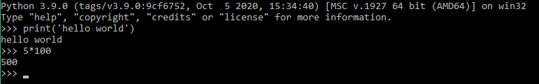

HOME BLOG EBOOKS ABOUT CONTACT SHOP
When you start Python from the terminal, what you get is an interactive mode where you can experiment. If you start typing statements, they will run immediately. There is no edit/compile/run/debug cycle.

In scripting mode python programs are put in .py files. You can create these files with any text editor of your choice, notepad, sublime text or any other.
To run a python program you need to specify the file name (ex hello.py) and specify a full path to the Python interpreter if the file is not saved in the default folder.
Let’s solve the following problem: We want to make an application that outputs the sum of any 2 no.'s. Here's the solution:
# This program adds two numbers
num1 = input('Enter first number: ')
num2 = input('Enter second number: ')
# Add two numbers
sum = float(num1) + float(num2)
# Display the sum
print('The sum of {0} and {1} is {2}'.format(num1, num2, sum))
Save this file as sum.py
Output:
Enter first number: 1.5
Enter second number: 6.3
The sum of 1.5 and 6.3 is 7.8
Using this program as a guide, you can learn a number of important core concepts about Python.
A python program is a sequence of statements:
a = 3 + 4
b = a * 2
print(b)
Each statement is terminated by a newline. Statements are executed one after the other until control reaches the end of the file.
Comments are portions of the code that will not be executed. They are used to make the program more legible for a programmer and anyone else who may use this code
#This is a comment
#This is also a comment
#a = b+2 this too is a comment
Comments are denoted by # and extend to the end of the line.
A variable is a name used to store a value. You can use letters (lower and upper-case) from a to z. As well as the character underscore _. Numbers can also be part of the name of a variable, except as the first character.
height = 6
a = 1
max_value = 10
#All these are examples of variables
In python variables needn't be declared with a type. The type is automatically associated with the kind of value on the right hand side.
height = 442 #An integer
height = 442.5 #Floating point
height = 'Really tall' #A string
The perceived “type” of a variable might change as a program executes depending on the current value assigned to it.
Python is case sensitive. Upper and lower-case letters are considered different letters. These are all different variables:
name = 'Jake'
Name = 'Elwood'
NAME = 'Guido'
The if statement is used to execute a conditional:
if a > b:
print('Computer says no')
else:
print('Computer says yes')
You can check for multiple conditions by adding extra checks using elif.
if a > b:
print('Computer says no')
elif a==b:
print('Computer says yes')
else:
print('Computer says maybe')
The print function produces a single line of text with the values passed.
print('Hello world!') #Prints the text 'Hello world!'
You can use variables. The text printed will be the value of the variable, not the name.
x = 100
print(x) #Prints the text '100'
If you pass more than one value to print they are separated by spaces.
name = 'Jake'
print('My name is', name) #Print the text 'My name is Jake'
By default print() function puts a newline at the end.
The if statement is used to execute a conditional:
while a < 10:
print(a)
a = a+1
You can check for multiple conditions by adding extra checks using elif.
The if statement is used to execute a conditional:
while a < 10:
print(a)
a = a+1
You can check for multiple conditions by adding extra checks using elif.